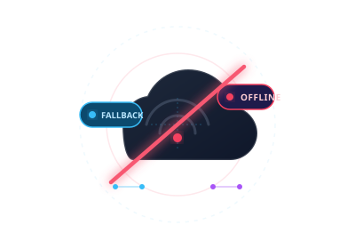

Service Worker • Interceptor Fetch Activo
Estás en Modo Sin Conexión
El recurso que intentaste consultar no se encuentra disponible en la memoria caché y tu dispositivo perdió la conexión a la red de Internet. El Service Worker interceptó el fallo en la solicitud y desplegó automáticamente esta plantilla alternativa de rescate.
¿Cómo funciona esta respuesta fallback?
Al no encontrar el recurso mediante caches.match() ni recibir respuesta con fetch(), el bloque .catch() del Service Worker detectó la petición de navegación HTML y sirvió de forma transparente esta vista almacenada en el App Shell.